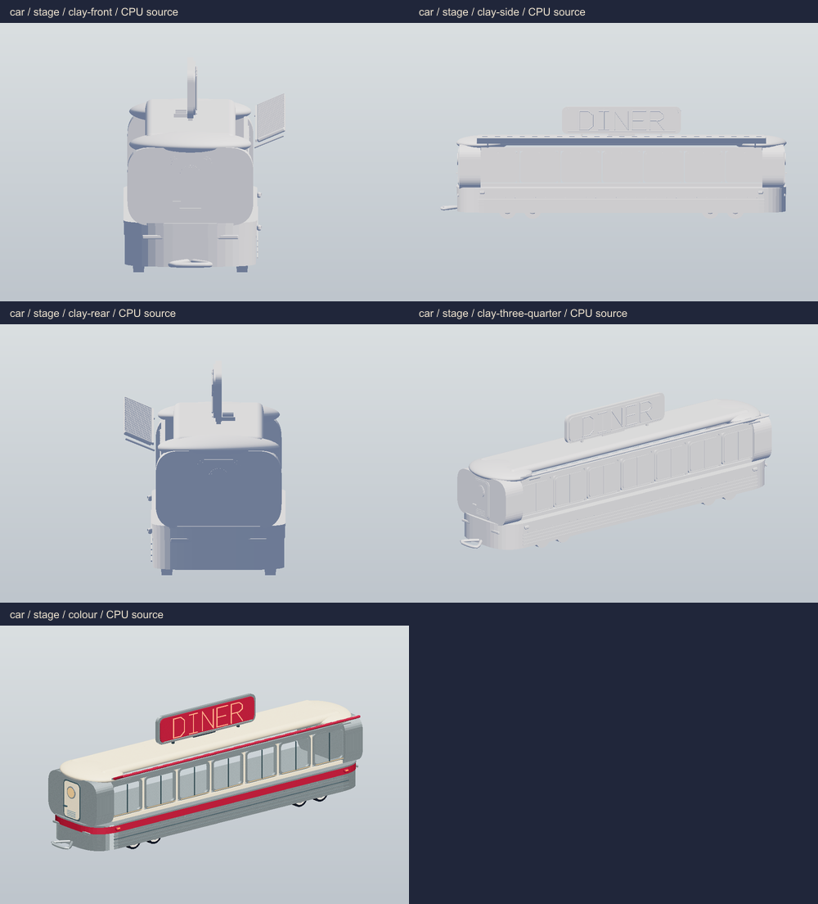
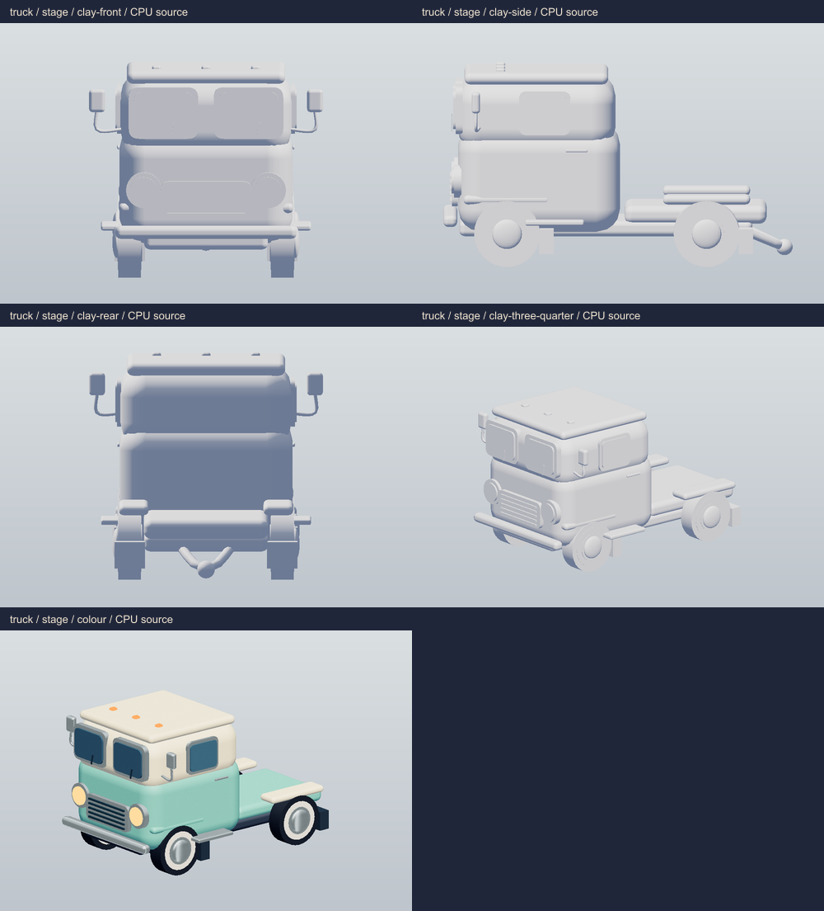
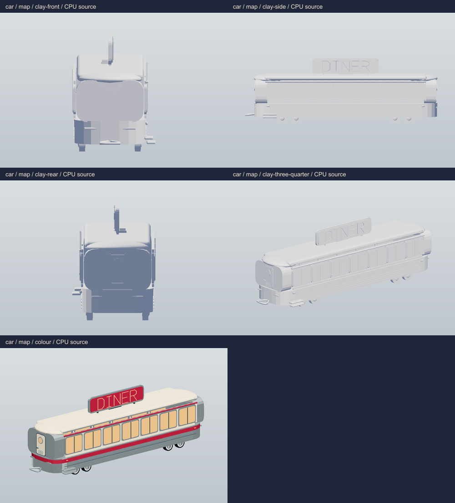
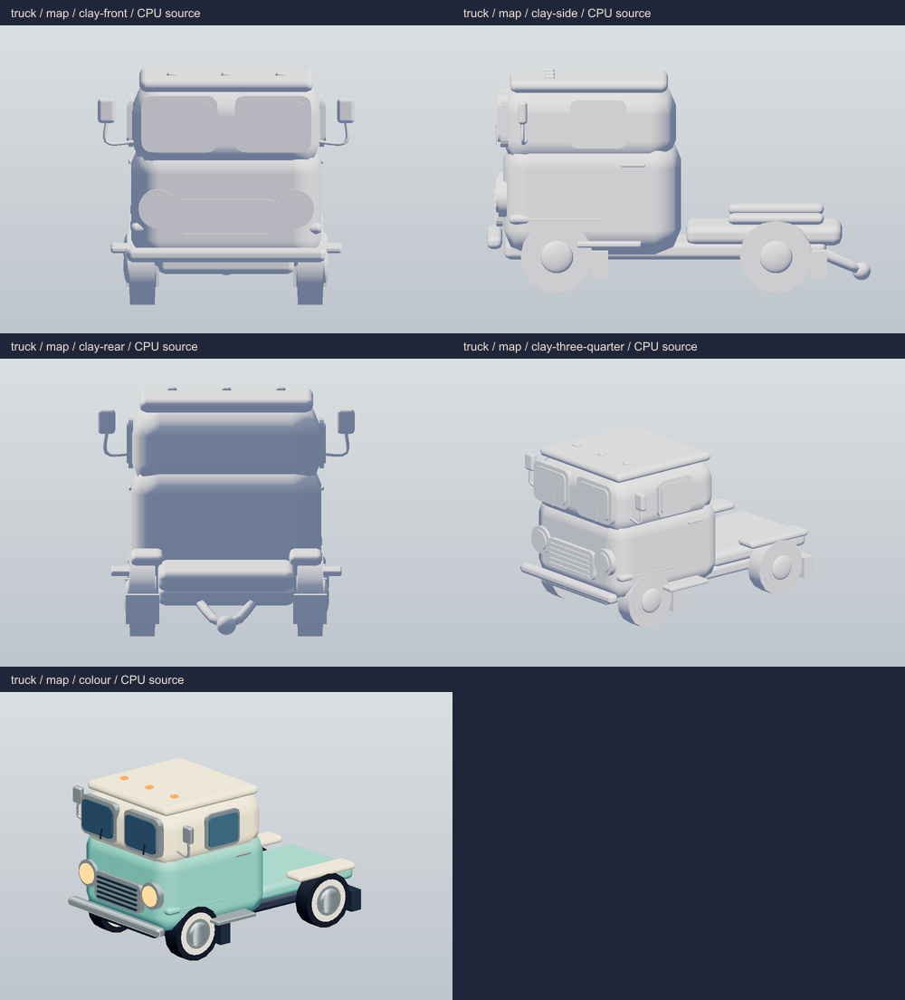
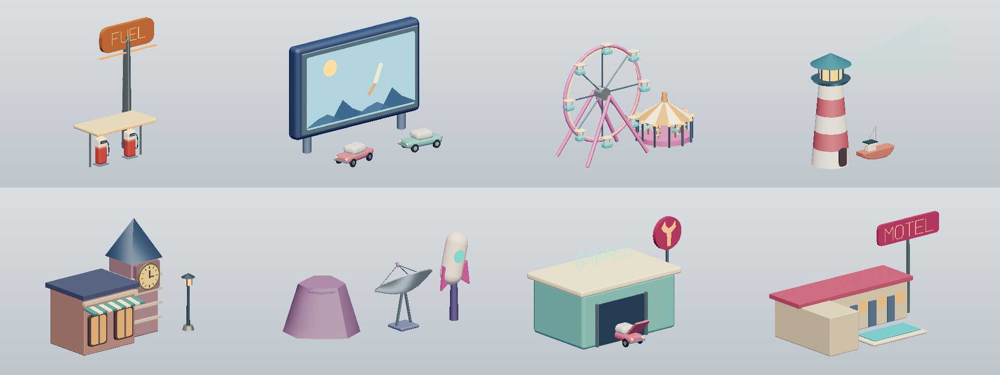
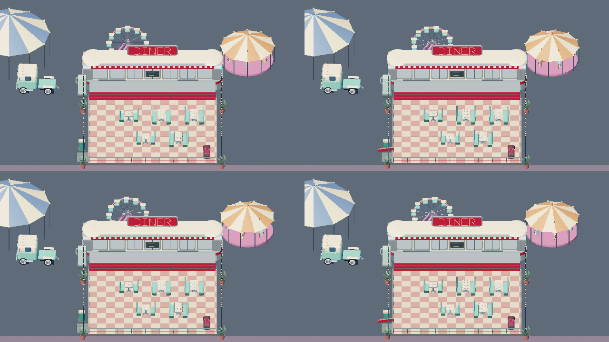
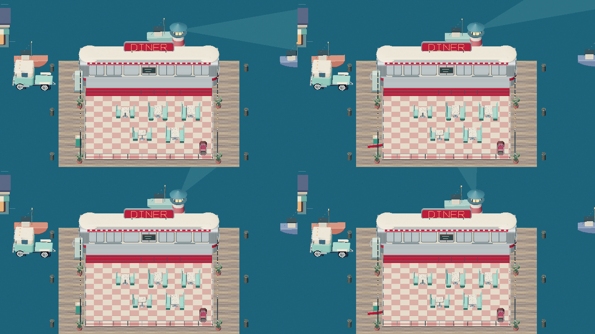

Diner car and six places
9 October 2026. CPU source renders of the live TypeScript geometry. These approximate materials and omit WebGL reflections, bloom, shadows and normal maps. Browser access was blocked; these are source review evidence.
Review notes and API · Raw geometry measurements · Browser blocker
The shift stage
Car and truck, clay and colour

car / stage detail / four clay angles and colour
truck / stage detail / four clay angles and colour
car / map detail / four clay angles and colour
truck / map detail / four clay angles and colourMap landmark vignettes

Truck stop, Drive-in, Fairground, Harbour, Old Town, Moon Mile, Garage and Motel
Living motion

Fairground, 0 / 2.5 / 5 / 7.5 seconds: Ferris wheel, upright cabins, carousel and entrance gate
Harbour, 0 / 2.5 / 5 / 7.5 seconds: lighthouse sweep, boats and entrance gateMeasured geometry budget
Conservative totals: main pass plus one complete shadow pass, all five booths, plain car. These are analytical source counts, not renderer.info measurements. High limits: 140 calls / 450,000 triangles. Low limits: 70 calls / 180,000 triangles.
| Place | High calls | High triangles | Low calls | Low triangles |
|---|
| Truck stop | 33 | 174,378 | 33 | 98,714 |
|---|
| Drive-in | 27 | 182,122 | 27 | 101,938 |
|---|
| Fairground | 45 | 207,918 | 45 | 113,550 |
|---|
| Harbour | 50 | 180,638 | 50 | 106,270 |
|---|
| Old Town | 27 | 188,302 | 27 | 108,974 |
|---|
| Moon Mile | 34 | 169,026 | 34 | 98,322 |
|---|
Every stage uses three point lights without shadows. Maximum procedural texture: 256 × 256. See notes for all-upgrade counts and validation.